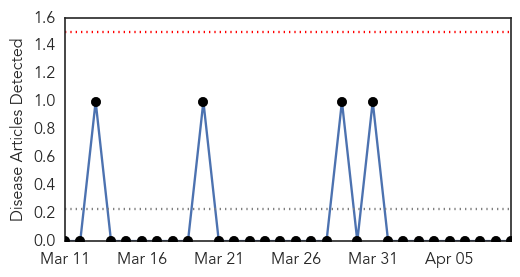
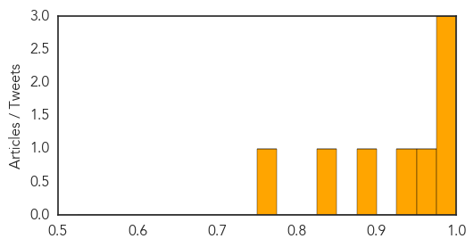

Yellow Fever
30-Day Web Trend
0 alerts, 0 warnings

30-Day Twitter Trend
0 alerts, 0 warnings

Article Locations

Article Confidences

Top Articles:
-
No articles found for Apr 09, 2014
Top Tweets:
-
No tweets found for Apr 09, 2014
Measles
30-Day Web Trend
0 alerts, 4 warnings

30-Day Twitter Trend
0 alerts, 0 warnings

Article Locations

Article Confidences
Top Articles:
- 0.997
- 6 vaccination myths debunked
- 0.996
- Why are Canadian measles outbreaks so much larger than U.S. outbreaks?
- 0.980
- Measles case at Baystate spurs alert
- 0.961
- Nova Scotia doctors keep an eye on measles
- 0.934
- APA Recommends Renewing Immunizations
- 0.891
- Kings of Leon concert goes viral, possible measles exposure in Seattle
- 0.850
- Traveler with measles may have exposed others in Valley
- 0.751
- Homegrown measles pop up
Top Tweets:
-
No tweets found for Apr 09, 2014